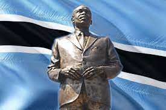

SIR SERETSE KHAMA DAY

July 1 is the birthday of Sir Seretse Khama, the man who led the nation of Botswana out of colonialism and laid the foundation for a modern democracy in his country. Khama was born in 1921, when Botswana was still known as Bechuanaland, a British protectorate. He was the eldest son of Khama III, the kgosi or king of the Bamangwato people. Upon his father's death, Seretse Khama became kgosi at the age of four, with his uncle, Tshekedi Khama, acting as his guardian and regent. Khama was educated at boarding schools in South Africa and began college there but finished his education in England. It was there he met and married Ruth Williams, a white Englishwoman. Shortly thereafter, he returned to his home country with his wife.
The interracial marriage caused an outcry both among tribal leaders and the pro-apartheid leadership of Bechuanaland's powerful neighbor, South Africa. Khama was able to win his own people over, but South African authorities were profoundly threatened by the marriage of a black tribal leader to a white woman. They stirred up a dispute with England regarding the legitimacy of Khama's claims to chieftancy. Due to this pressure from South Africa, Khama and his wife were exiled to England in 1951, and the following year, this exile was declared permanent. By 1956, however, public outcry about the way they had been treated resulted in the couple's return to Bechuanaland.
Khama formed the Bechuanaland Democratic Party and became the last colonial prime minister of Bechuanaland, serving in that post from 1965-66. He was also honored with knighthood in 1966. On September 30, 1966, Bechuanaland became the independent country of Botswana, with Khama as its president. He held this post until his death in 1980. When Botswana became independent, it was widely assumed the country would have to be dependent on one of its wealthier neighbors, for Botswana was so poor that its tax base seemed too small to support the country. Yet through Khama's initiatives, Botswana was able to develop an independent, export-based economy.
Sir Seretse Khama Day is a national holiday, honored across Botswana as a day to remember Khama's contributions to his homeland. In celebrations in Serowe, which is Botswana's capital as well as Khama's birthplace, people proceed from various points to the main town center, where musical and religious groups have gathered. Traditional dances, such as the tsutsube, are performed. Speeches and ceremonies are made at the city's statue honoring Khama, and a wreath is laid at his grave in the royal cemetery.
Maitisong Festival

Gaborone’s major festival takes place in March, and is a performing arts cornucopia of traditional music, dance and theatre held all over the city and its suburbs. The event lasts for nine full days and sees the entire population take to the streets in carnival mode. Maitisong (“place of entertainment” in Setswana) is owned by Maru-a-Pula School, and is located in the heart of Botswana’s capital city, Gaborone. Maru-a-Pula School has had a policy of outreach to the community since the school was opened in 1972, so when the school realized that it needed a hall, the Headmaster at that time, David Matthews, campaigned to raise money to build a space that would fulfil a dual role of school assembly hall and community theatre venue. Money was raised in the USA and South Africa, and architect Ian Marshall drew up the construction plans. Building began in 1986, and on 22 March 1987, the doors of Maitisong were officially opened. The Maitisong Festival was created to give the public an opportunity to be inspired by the best of the local arts scene. Many groups came together and performed in the first Maitisong Festival. Music, dance and drama burst onto the stage like it never before in Gaborone. A new theatrical age for Botswana had dawned. High-profile local and international artists such as Abdullah Ibrahim, Sibongile Khumalo, Pieter-Dirk Uys, Oliver Mtukudzi, Shanti Lo and Sedibeng Choir have also performed on the Maitisong stage. Maitisong is a pioneer in celebrating the arts in Botswana. The Maitisong Office has become a useful cultural resource; information and advice regarding performers, music lessons, theatre management and fund raising has been sought at Maitisong over the years. Maitisong’s voice has even been heard on the Botswana Cultural Council – the country’s highest cultural body. It has also been closely associated with the Botswana Music Camp and the ‘My African Dream’ national talent search. Maitisong is a visible symbol of Maru-a-Pula School’s policy of reaching out to the community, as thousands of people come onto the school campus each year to attend shows in the theatre hall.